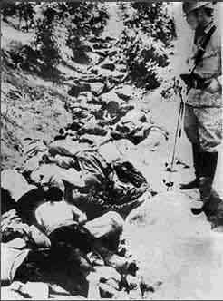

侵华日军南京大屠杀 |
|||||
|  | An Undeniable
History in Photographs The story in words and more than 400 photographs of the Japanese
invasion of China and the sacking of its capital city, Nanking, in 1937-38. THE SAVAGERY OF THE KILLING WAS
|
||||
|
[ DETAILS ] [ DISPLAYS PICTURE ] |
|||||
|
|||||
|
|||||
. 三七年十二月十三日，日��侵略��は当�rの中国.南京を占领して。六�L�gにゎたる血なまぐさぃ大虐��を演じた。虐��された者の系总�丹�三十万人にものぼろ。�淄蛉摔猡��D人は累行され多数の�D人ほ暴行された上にまた�y��、�_き��し、死体さぼきとぃぅ残酷な目に遭った。日本��は至る所で放火し、��きれゎれた家屋は町全体の三分の一以上に�Qする。街のぃたると二ろに死体が横たゎり、その恶臭にたぇられなぃ悲惨なありとまだった。 |
|||||
© Copyright 2000 Chinese, All rights reserved. |